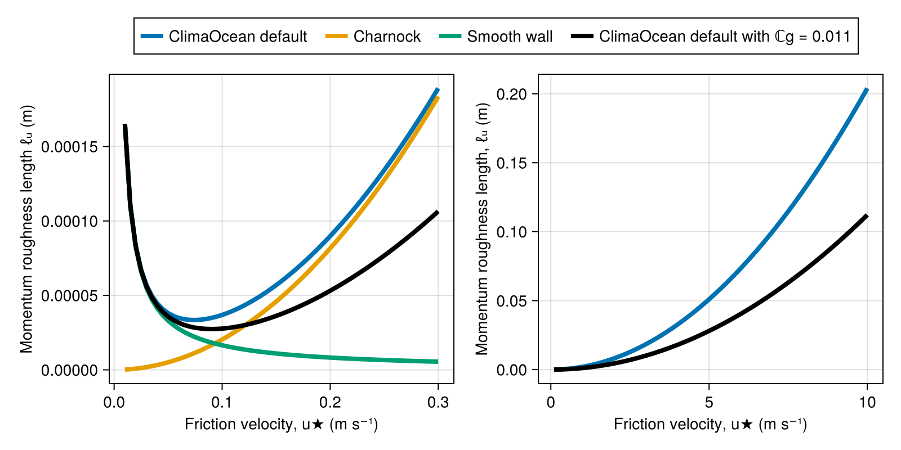
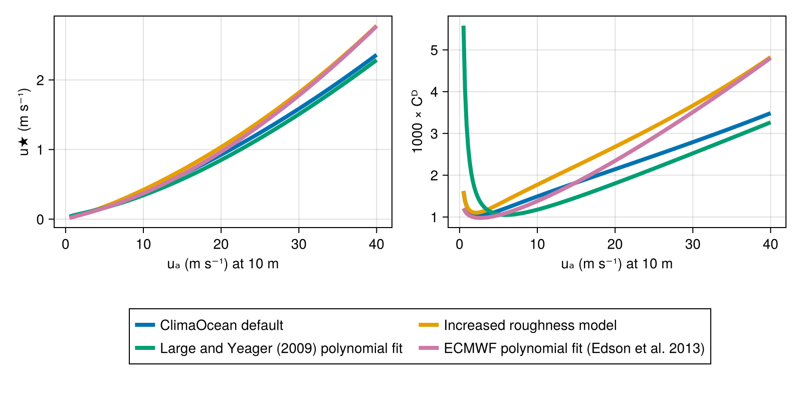
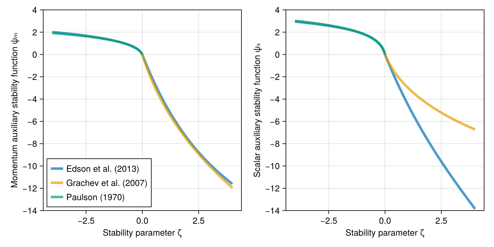
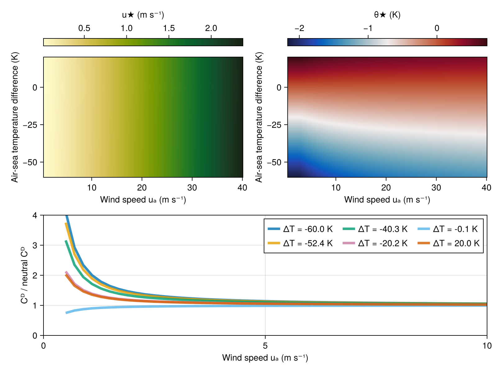

Turbulent fluxes at component interfaces
To motivate this tutorial, we first note that ClimaOcean's OceanSeaIceModel has essentially two goals:
- Manage time-stepping multiple component models forward simultaneously,
- Compute and communicate fluxes between the component models.
This tutorial therefore touches on the latter of the two main purposes of OceanSeaIceModel: computing turbulent fluxes between model components.
Component interfaces we consider
The OceanSeaIceModel has atmosphere, ocean, and sea ice components (and will someday also have land and radiation components). We envision that the tutorial will eventually cover all turbulent flux computations; for the time being we focus on atmosphere-ocean fluxes. Future expansions of this tutorial should cover atmosphere-sea ice fluxes, ocean-sea ice fluxes, ocean-land fluxes, and surface optical computations for radiation.
Turbulent exchanges between the atmosphere and underlying media
Exchanges of properties like momentum, heat, water vapor, and trace gases between the fluid atmosphere and its underlying surfaces – ocean, sea ice, snow, land – mediate the evolution of the Earth system. Microscopic property exchange is mediated by a complex panoply of processes including heat conduction, viscous and pressure form drag over rough surface elements, plunging breakers, and more. To represent atmosphere-surface exchanges, we construct a model of the near-surface atmosphere that connects a turbulent "similarity layer", which is usually a few meters thick, with a "constant flux layer" that buffers free atmospheric turbulence from microscopic surface exchange processes beneath. The problem of modeling property exchange then turns to the task of modeling turbulent atmospheric fluxes just above the constant flux layer.
Bulk formula and similarity theory
Within in each grid cell at horizontal position $x, y, t$, the atmosphere-surface turbulent fluxes of some quantity $\psi$ – at the bottom of the similarity layer, and thus throughout the constant flux layer and across the surface – is defined as
\[J_\psi(x, y, t) = \overline{w' \psi'}\]
where $w$ is the atmospheric vertical velocity, the overline $\overline{( \; )}$ denotes a horizontal average over a grid cell, and primes denote deviations from the horizontal average.
Arguably, the averaging operator $\overline{( \; )}$ should also represent an average in time, which is implicit in the context of typical global Earth system modeling. Explicit time-averaging is required to evaluate flux observations, however, and may also be warranted for high-resolution coupled modeling. Flux computations in ClimaOcean currently compute fluxes in terms of the instantaneous states of its components, but spatial coarse-graining and time-averaging for computing fluxes at high resolution should be the subject of future research.
The essential turbulent fluxes that couple the ocean and atmosphere are
Momentum fluxes $\rho_a \overline{\bm{u}'w'}$, where $\rho_a$ is the atmosphere density at the air-sea interface and $\bm{u}$ is horizontal velocity.
Sensible heat fluxes $\rho_a c_{a} \overline{w'\theta'}$ due to fluid dynamical heat transport, where $\rho_a$ is the atmosphere density at the air-sea interface, $c_a$ is the atmosphere specific heat at constant pressure, and $\theta$ is the atmosphere potential temperature.
Water vapor fluxes $\overline{w' q'}$ due to evaporation and condensation, where $q$ is the atmosphere specific humidity at the air-sea interface (the ratio between the mass of water and the total mass of an air parcel).
Latent heat fluxes $\rho_a \mathscr{L}_v \overline{w' q'}$ due to the conversion of liquid ocean water into water vapor during evaporation, and vice versa during condensation, where $\mathscr{L}_v$ is the latent heat of vaporization at the air-sea interface.
There are two ways by which turbulent fluxes may be computed: by specifying "transfer coefficients", or by using Monin–Obukhov similarity theory. In both cases, computing turbulent fluxes requires:
- Atmosphere-surface differences in horizontal velocity, $\Delta \bm{u}$,
- Atmosphere-surface differences in temperature, $\Delta \theta$,
- The skin surface temperature $T_s$, which is used to compute the surface specific humidity $q_s$ and the atmosphere-surface specific humidity difference $\Delta q$,
- Additional atmosphere-surface trace gas differences for computing trace gas fluxes,
- Possibly, additional "bulk" properties of the surface media and radiation fluxes in order to compute an equilibrium "skin" surface temperature that differs from the bulk temperature below the surface.
In general, the surface specific humidity is typically related to the saturation specific humidity at the the surface temperature $T_s$, according to the Clausius-Claperyon relation. For example, for ocean surfaces, the surface specific humidity is computed according to via Raoult's law as
\[q^\dagger(\rho, S, T) = x_{H_2O}(S) \frac{p_v^\dagger}{\rho R_v T}\]
where $x_{H_2O}(S)$ is the mole fraction of pure water in seawater with salinity $S$, and $p_v^\dagger$ is the saturation vapor pressure,
\[p_v^\dagger(T) = p_{tr} \left ( \frac{T}{T_{tr}} \right )^{\Delta c_p / R_v} \exp \left [ \frac{ℒ_{v0} - Δc_p T₀}{R_v} \left (\frac{1}{T_{tr}} - \frac{1}{T} \right ) \right ] \quad \text{where} \quad Δc_p = c_{p \ell} - c_{pv} \, .\]
Many flux solvers (and the OMIP protocol) use a constant $x_{H_2O} = 0.98$, which is equivalent to assuming that the surface salinity is $S \approx 35 \, \mathrm{g \, kg^{-1}}$, along with a reference seawater salinity composition. Other surface specific humidity models may be used that take into account, for example, the microscopic structure of snow, or the presence of a "dry skin" that buffers saturated soil from the atmosphere in a land model.
Default values for the atmosphere thermodynamic parameters used to compute the saturation vapor pressure and atmospheric equation of state are
using ClimaOcean.OceanSeaIceModels.PrescribedAtmospheres: AtmosphereThermodynamicsParameters
AtmosphereThermodynamicsParameters()AtmosphereThermodynamicsParameters{Float64}:
├── ConstitutiveParameters{Float64}:
│ ├── gas_constant (R): 8.31446
│ ├── dry_air_molar_mass (Mᵈ): 0.02897
│ └── water_molar_mass (Mᵛ): 0.018015
├── HeatCapacityParameters{Float64}:
│ ├── dry_air_adiabatic_exponent (κᵈ): 0.285714
│ ├── water_vapor_heat_capacity (cᵖᵛ): 1859.0
│ ├── liquid_water_heat_capacity (cᵖˡ): 4181.0
│ └── water_ice_heat_capacity (cᵖⁱ): 2100.0
└── PhaseTransitionParameters{Float64}
├── reference_vaporization_enthalpy (ℒᵛ⁰): 2.5008e6
├── reference_sublimation_enthalpy (ℒˢ⁰): 2.8344e6
├── reference_temperature (T⁰): 273.16
├── triple_point_temperature (Tᵗʳ): 273.16
├── triple_point_pressure (pᵗʳ): 611.657
├── water_freezing_temperature (Tᶠ): 273.15
└── total_ice_nucleation_temperature (Tⁱ): 233.0Coefficient-based fluxes
Turbulent fluxes may be computed by prescribing "transfer coefficients" that relate differences between the near-surface atmosphere and the ocean surface to fluxes,
\[\overline{\bm{u}' w'} ≈ C_D \, Δ \bm{u} \, U \\ \overline{w' \theta'} ≈ C_\theta \, Δ \theta \, U \\ \overline{w' q'} ≈ C_q \, Δ q \, U\]
The variable $U$ is a characteristic velocity scale, which is most simply formulated as $U = | Δ \bm{u}|$. However, some parameterizations use formulations for $U$ that produce non-vanishing heat and moisture fluxes in zero-mean-wind conditions. Usually these parameterizations are formulated as models for "gustiness" associated with atmospheric convection; but more generally a common thread is that $U$ may include contributions from unresolved turbulent motions in addition to the relative mean velocity, $Δ \bm{u}$.
The variable $C_D$ is often called the drag coefficient, while $C_\theta$ and $C_q$ are the heat transfer coefficient and vapor flux coefficient. The simplest method for computing fluxes is merely to prescribe $C_D$, $C_\theta$, and $C_q$ as constants – typically with a magnitude around $5 × 10^{-4}$–$2 × 10^{-3}$. A comprehensive example is given below, but we note briefly here that ClimaOcean supports the computation of turbulent fluxes with constant coefficients via
using ClimaOcean
coefficient_fluxes = CoefficientBasedFluxes(drag_coefficient=2e-3,
heat_transfer_coefficient=2e-3,
vapor_flux_coefficient=1e-3)CoefficientBasedFluxes
├── drag_coefficient: 0.002
├── heat_transfer_coefficient: 0.002
└── vapor_flux_coefficient: 0.001
Similarity theory for neutral boundary layers
The standard method for computing fluxes in realistic Earth system modeling contexts uses a model for the structure of the near-surface atmosphere based on Monin–Obukhov similarity theory. Similarity theory is essentially a dimensional argument and begins with the definition of "characteristic scales" which are related to momentum, heat, and vapor fluxes through
\[u_\star^2 ≡ | \overline{\bm{u}' w'} | \\ u_\star \theta_\star ≡ \overline{w' \theta'} \\ u_\star q_\star ≡ \overline{w' q'}\]
where $u_\star$, often called the "friction velocity", is the characteristic scale for velocity, $\theta_\star$ is the characteristic scale for temperature, and $q_\star$ is the characteristic scale for water vapor.
To introduce similarity theory, we first consider momentum fluxes in "neutral" conditions, or with zero buoyancy flux. We further simplify the situation by considering unidirectional flow with $\bm{u} = u \, \bm{\hat x}$. (To generalize our results to any flow direction, we simply rotate fluxes into the direction of the relative velocity $Δ \bm{u}$.) The fundamental supposition of similarity theory is that the vertical shear depends only on height above the boundary, such that by dimensional analysis,
\[\partial_z u \sim \frac{u_\star}{z} \, , \qquad \text{and thus} \qquad \partial_z u = \frac{u_\star}{\kappa z} \, ,\]
where the second expression forms an equality by introducing the "Von Karman constant" $\kappa$, which is placed in the denominator by convention. We can then integrate this expression from an inner scale $z=\ell$ up to $z=h$ to obtain
\[u_a(h) - u_a(\ell_u) = \frac{u_⋆}{\kappa} \log \left ( \frac{h}{\ell_u} \right )\]
The inner length scale $\ell_u$, which is called the "momentum roughness length", can be interpreted as producing a characteristic upper value for the boundary layer shear, $u_⋆ / \ell_u$ in the region where similarity theory must be matched with the inner boundary layer (such as a viscous sublayer) below. Note that we take the inner velocity scale $u_a(\ell_u)$ as being equal to the velocity of the surface, so $u_a(\ell_u) = u_s$.
We currently assume that the input to the surface flux computation is the atmospheric velocity at $z=h$. However, in coupled modeling context we are typically instead given the atmosphere velocity averaged over the height of the first layer, or $⟨u_a⟩_h = \frac{1}{h} \int_0^h \, u_a \, \mathrm{d} z$. Formulating the flux computation in terms of $⟨u_a⟩_h$ rather than $u_a(h)$ (e.g. Nishizawa and Kitamura (2018)) is a minor modification to the algorithm and an important avenue for future work.
The roughness length in general depends on the physical nature of the surface. For smooth, no-slip walls, experiments (cite) found agreement with a viscous sublayer model
\[\ell_ν = \mathbb{C}_\nu \frac{\nu}{u_\star} \, ,\]
where $\nu$ is the kinematic viscosity of the fluid (the air in our case) and $\mathbb{C}_\nu$ is a free parameter which was found to be around $0.11$. For air-water interfaces that develop a wind-forced spectrum of surface gravity waves, the alternative scaling
\[\ell_g = \mathbb{C}_g \frac{u_\star^2}{g} \, ,\]
where $g$ is gravitational acceleration, has been repeatedly (and perhaps shockingly due to its simplicity) confirmed by field campaigns. The free parameter $\mathbb{C}_g$ is often called the "Charnock parameter" and takes typical values between $0$ and $0.03$ (Edson et al., 2013).
using ClimaOcean
using CairoMakie
set_theme!(Theme(fontsize=14, linewidth=4))
charnock_length = MomentumRoughnessLength(wave_formulation = 0.02,
smooth_wall_parameter = 0,
maximum_roughness_length = Inf)
smooth_wall_length = MomentumRoughnessLength(wave_formulation = 0,
smooth_wall_parameter = 0.11)
default_roughness_length = MomentumRoughnessLength()
modified_default_length = MomentumRoughnessLength(wave_formulation = 0.011)
u★ = 1e-2:5e-3:3e-1
ℓg = charnock_length.(u★)
ℓν = smooth_wall_length.(u★)
ℓd = default_roughness_length.(u★)
ℓ2 = modified_default_length.(u★)
fig = Figure(size=(800, 400))
ax1 = Axis(fig[1, 1], xlabel="Friction velocity, u★ (m s⁻¹)", ylabel="Momentum roughness length ℓᵤ (m)")
lines!(ax1, u★, ℓd, label="ClimaOcean default")
lines!(ax1, u★, ℓg, label="Charnock")
lines!(ax1, u★, ℓν, label="Smooth wall")
lines!(ax1, u★, ℓ2, color=:black, label="ClimaOcean default with ℂg = 0.011")
ax2 = Axis(fig[1, 2], xlabel="Friction velocity, u★ (m s⁻¹)", ylabel="Momentum roughness length, ℓᵤ (m)")
u★ = 0.1:0.1:10
ℓd = default_roughness_length.(u★)
ℓ2 = modified_default_length.(u★)
lines!(ax2, u★, ℓd)
lines!(ax2, u★, ℓ2, color=:black)
Legend(fig[0, 1:2], ax1, orientation=:horizontal)
fig
The roughness length $\ell$ should not be interpreted as a physical length scale, a fact made clear by its submillimeter magnitude under (albeit calm) air-sea flux conditions.
Computing fluxes and the effective similarity drag coefficient
ClimaOcean's default roughness length for air-sea fluxes is a function of the friction velocity $u_\star$. This formulation produces a nonlinear equation for $u_\star$, in terms of $Δ u = u_a(h) - u_o$, which we emphasize by rearranging the similarity profile
\[u_\star = \frac{\kappa \, Δ u}{\log \left [ h / \ell_u(u_\star) \right ]} \, .\]
The above equation is solved for $u_\star$ using fixed-point iteration initialized with a reasonable guess for $u_\star$. Once $u_\star$ is obtained, the similarity drag coefficient may then be computed via
\[C_D(h) ≡ \frac{u_\star^2}{|Δ u(h)|^2} = \frac{\kappa^2}{\left ( \log \left [ h / \ell_u \right ] \right )^2} \,\]
where we have used the simple bulk velocity scale $U = Δ u$. We have also indicated that, the effective similarity drag "coefficient" depends on the height $z=h$ at which the atmospheric velocity is computed to form the relative velocity $Δ u = u_a(h) - u_o$. Most observational campaigns use $h = 10 \, \mathrm{m}$ and most drag coefficients reported in the literature pertain to $h=10 \, \mathrm{m}$.
To compute fluxes with ClimaOcean, we build an OceanSeaIceModel with an atmosphere and ocean state concocted such that we can evaluate fluxes over a range of relative atmosphere and oceanic conditions. For this we use a $200 × 200$ horizontal grid and start with atmospheric winds that vary from the relatively calm $u_a(10 \, \mathrm{m}) = 0.5 \, \mathrm{m \, s^{-1}}$ to a blustery $u_a(10 \, \mathrm{m}) = 40 \, \mathrm{m \, s^{-1}}$. We also initialize the ocean at rest with surface temperature $T_o = 20 \, \mathrm{{}^∘ C}$ and surface salinity $S_o = 35 \, \mathrm{g \, kg^{-1}}$ – but the surface temperature and salinity won't matter until later.
using Oceananigans
using ClimaOcean
# Atmosphere velocities
Nx = Ny = 200
uₐ = range(0.5, stop=40, length=Nx) # winds at 10 m, m/s
# Ocean state parameters
T₀ = 20 # Surface temperature, ᵒC
S₀ = 35 # Surface salinity
x = y = (0, 1)
z = (-1, 0)
atmos_grid = RectilinearGrid(size=(Nx, Ny); x, y, topology=(Periodic, Periodic, Flat))
ocean_grid = RectilinearGrid(size=(Nx, Ny, 1); x, y, z, topology=(Periodic, Periodic, Bounded))
# Build the atmosphere
atmosphere = PrescribedAtmosphere(atmos_grid, surface_layer_height=10)
interior(atmosphere.tracers.T) .= 273.15 + T₀ # K
interior(atmosphere.velocities.u, :, :, 1, 1) .= uₐ # m/s
kw = (momentum_advection=nothing, tracer_advection=nothing, closure=nothing)
ocean = ocean_simulation(ocean_grid; kw...)
set!(ocean.model, T=T₀, S=S₀)Next we build two models with different flux formulations – the default "similarity model" that uses similarity theory with "Charnock" gravity wave parameter $\mathbb{C}_g = 0.02$, and a "coefficient model" with a constant drag coefficient $C_D = 2 × 10^{-3}$:
neutral_similarity_fluxes = SimilarityTheoryFluxes(stability_functions=nothing)
interfaces = ComponentInterfaces(atmosphere, ocean; atmosphere_ocean_fluxes=neutral_similarity_fluxes)
default_model = OceanSeaIceModel(ocean; atmosphere, interfaces)
momentum_roughness_length = MomentumRoughnessLength(wave_formulation=0.04)
neutral_similarity_fluxes = SimilarityTheoryFluxes(stability_functions=nothing; momentum_roughness_length)
interfaces = ComponentInterfaces(atmosphere, ocean; atmosphere_ocean_fluxes=neutral_similarity_fluxes)
increased_roughness_model = OceanSeaIceModel(ocean; atmosphere, interfaces)
coefficient_fluxes = CoefficientBasedFluxes(drag_coefficient=2e-3)
interfaces = ComponentInterfaces(atmosphere, ocean; atmosphere_ocean_fluxes=coefficient_fluxes)
coefficient_model = OceanSeaIceModel(ocean; atmosphere, interfaces)OceanSeaIceModel{CPU}(time = 0 seconds, iteration = 0)
├── ocean: HydrostaticFreeSurfaceModel{CPU, RectilinearGrid}(time = 0 seconds, iteration = 0)
├── atmosphere: 200×200×1×1 PrescribedAtmosphere{Float64}
├── sea_ice: FreezingLimitedOceanTemperature{ClimaSeaIce.SeaIceThermodynamics.LinearLiquidus{Float64}}
└── interfaces: ComponentInterfacesNote that OceanSeaIceModel computes fluxes upon instantiation, so after constructing the two models we are ready to analyze the results. We first verify that the similarity model friction velocity has been computed successfully,
u★ = default_model.interfaces.atmosphere_ocean_interface.fluxes.friction_velocity
u★ = interior(u★, :, 1, 1)
extrema(u★)(0.020127377401717002, 2.3614792687411392)and it seems that we've obtained a range of friction velocities, which is expected given that our atmospheric winds varied from $0.5$ to $40 \, \mathrm{m \, s^{-1}}$. Computing the drag coefficient for the similarity model is as easy as
Cᴰ_default = @. (u★ / uₐ)^2
extrema(Cᴰ_default)(0.001046880495265254, 0.0034853652104338663)We'll also re-compute the drag coefficient for the coefficient model (which we specified as constant), which verifies that the coefficient was correctly specified:
u★_coeff = coefficient_model.interfaces.atmosphere_ocean_interface.fluxes.friction_velocity
u★_coeff = interior(u★_coeff, :, 1, 1)
Cᴰ_coeff = @. (u★_coeff / uₐ)^2
extrema(Cᴰ_coeff)(0.0019999999999998864, 0.0020000000000000013)We'll compare the computed fluxes and drag coefficients from our two models with a polynomial expression due to Large and Yeager (2009), and an expression reported by Edson et al. (2013) that was developed at ECMWF,
# From Large and Yeager (2009), equation 10
c₁ = 0.0027
c₂ = 0.000142
c₃ = 0.0000764
u★_LY = @. sqrt(c₁ * uₐ + c₂ * uₐ^2 + c₃ * uₐ^3)
Cᴰ_LY = @. (u★_LY / uₐ)^2
# From Edson et al. (2013), equation 20
c₁ = 1.03e-3
c₂ = 4e-5
p₁ = 1.48
p₂ = 0.21
Cᴰ_EC = @. (c₁ + c₂ * uₐ^p₁) / uₐ^p₂
u★_EC = @. sqrt(Cᴰ_EC) * uₐ
extrema(u★_EC)(0.01737796895740937, 2.773174836393143)Finally, we plot the results to compare the estimated friction velocity and effective drag coefficient from the polynomials expressions with the two OceanSeaIceModels:
using CairoMakie
set_theme!(Theme(fontsize=14, linewidth=4))
# Extract u★ and compute Cᴰ for increased roughness model
u★_rough = increased_roughness_model.interfaces.atmosphere_ocean_interface.fluxes.friction_velocity
u★_rough = interior(u★_rough, :, 1, 1)
Cᴰ_rough = @. (u★_rough / uₐ)^2
fig = Figure(size=(800, 400))
axu = Axis(fig[1:2, 1], xlabel="uₐ (m s⁻¹) at 10 m", ylabel="u★ (m s⁻¹)")
lines!(axu, uₐ, u★, label="ClimaOcean default")
lines!(axu, uₐ, u★_rough, label="Increased roughness model")
lines!(axu, uₐ, u★_LY, label="Large and Yeager (2009) polynomial fit")
lines!(axu, uₐ, u★_EC, label="ECMWF polynomial fit (Edson et al. 2013)")
axd = Axis(fig[1:2, 2], xlabel="uₐ (m s⁻¹) at 10 m", ylabel="1000 × Cᴰ")
lines!(axd, uₐ, 1000 .* Cᴰ_default, label="ClimaOcean default")
lines!(axd, uₐ, 1000 .* Cᴰ_rough, label="Increased roughness model")
lines!(axd, uₐ, 1000 .* Cᴰ_LY, label="Large and Yeager (2009) polynomial fit")
lines!(axd, uₐ, 1000 .* Cᴰ_EC, label="ECMWF polynomial fit (Edson et al. 2013)")
Legend(fig[3, 1:2], axd, nbanks = 2)
fig
Non-neutral boundary layers and stability functions
The relationship between the relative air-sea state and turbulent fluxes is modified by the presence of buoyancy fluxes – "destabilizing" fluxes, which stimulate convection, tend to increase turbulent exchange, while stabilizing fluxes suppress turbulence and turbulent exchange. Monin–Obhukhov stability theory provides a scaling-argument-based framework for modeling the effect of buoyancy fluxes on turbulent exchange.
Buoyancy flux and stability of the near-surface atmosphere
Our next objective is to characterize the atmospheric statbility in terms of the buoyancy flux, $\overline{w' b'}$, which requires a bit of thermodynamics background to define the buoyancy perturbation, $b'$.
Buoyancy for a non-condensing mixture of dry air and water vapor
The atmosphere is generally a mix of dry air, water vapor, non-vapor forms of water such as liquid droplets, ice particles, rain, snow, hail, sleet, graupel, and more, and trace gases. In the definition of buoyancy that follows, we neglect both the mass and volume of non-vapor water, so that the specific humidity may be written
\[q \approx \frac{\rho_v}{\rho_v + \rho_d} \approx \frac{\rho_v}{\rho} \, ,\]
where $\rho_v$ is the density of water vapor, $\rho_d$ is the density of dry air, and $\rho \approx \rho_v + \rho_d$ is the total density neglecting the mass of hypothetical condensed water species.
We endeavor to provide more information about the impact of this approximation. Also, note that atmospheric data products like JRA55 do not explicitly provide the mass ratio of condensed water, so the approximation is required in at least some situations (such as simulations following the protocol of the Ocean Model Intercomparison Project, OMIP). On the other hand, generalizing the buoyancy formula that follow below to account for the mass of condensed water is straightforward.
The ideal gas law for a mixture of dry air and water vapor is then
\[p = \rho R_m(q) T \, \qquad \text{where} \qquad R_m(q) ≈ R_d \left (1 - q \right ) + R_v q = R_d \left ( 1 - \mathscr{M} q \right ) \, ,\]
where $\mathscr{M} = R_v/R_d - 1$ and $R_m(q)$ is the effective mixture gas "constant" which varies with specific humidity $q$, and the $\approx$ indicates that its form neglects the mass of condensed species.
The buoyant perturbation experienced by air parcels advected by subgrid turbulent motions is then
\[b' ≡ - g \frac{\rho - \bar{\rho}}{\rho} = g \frac{\alpha - \bar{\alpha}}{\bar{\alpha}} \qquad \text{where} \qquad α = \frac{1}{\rho} = \frac{R_m T}{p} \, .\]
We neglect the effect of pressure perturbations to compute the buoyancy flux, so that $p = \bar{p}$ and
\[\alpha - \bar{\alpha} = \frac{R_d}{p} \left [ T' - \mathscr{M} \left ( q' \bar{T} + \bar{q} T' + q' T' - \overline{q' T'} \right ) \right ] \, .\]
Buoyancy flux and the characteristic buoyancy scale
In a computation whose details are reserved for an appendix, and which neglects $\overline{q'T'}$ and the triple correlation $\overline{w' q' T'}$, we find that the buoyancy flux is approximately
\[\overline{w' b'} \approx g \frac{\overline{w'T'} - \mathscr{M} \left ( \overline{w' q'} \bar{T} + \bar{q} \overline{w' T'} \right )}{\bar{T} \left ( 1 - \mathscr{M} \bar q \right )} \, .\]
The characteristic buoyancy scale $b_\star$, defined via $u_\star b_\star \equiv \overline{w'b'}|_0$, is defined analogously to the temperature and vapor scales $u_\star \theta_\star \equiv \overline{w' T'}$ and $u_\star q_\star \equiv \overline{w' q'}$. We therefore find
\[b_⋆ ≡ g \frac{\theta_\star - \mathscr{M} \left ( q_\star T_s + q_s \theta_\star \right ) }{ T_s \left (1 + \mathscr{M} q_s \right )} \, .\]
Stability of the near-surface atmosphere
We use the ratio between the buoyancy flux and shear production at $z=h$ – which oceanographers often call the "flux Richardson number", $Ri_f$ – to diagnose the stability of the atmosphere,
\[Ri_f(z) ≡ ζ(z) \equiv - \frac{\overline{w' b'}}{\partial_z \bar{\bm{u}} \, ⋅ \, \overline{\bm{u}' w'}} = - \frac{\kappa \, z}{u_\star^2} b_⋆ = \frac{z}{L_\star} \qquad \text{where} \qquad L_\star ≡ - \frac{u_\star^2}{\kappa b_\star} \, ,\]
$\zeta$ is called the "stability parameter" and $L_\star$ is called the "Monin–Obhukhov length scale".
The Monin–Obhukhov "stability functions"
The fundamental premise of Monin–Obhkhov stability theory is that shear within a similarity layer affected by buoyancy fluxes may written
\[\frac{\kappa \, z}{u_\star} \partial_z \bar{u} = \tilde{\psi}_u(\zeta) \, ,\]
where $\tilde{\psi}_u(\zeta)$ is called the "stability function" (aka "dimensionless shear", and often denoted $\phi$). Comparing the Monin–Obukhov scaling to the neutral case expounded above, we find that $\tilde{\psi}(0) = 1$ in neutral conditions with $\zeta=0$. In the presence of destabilizing fluxes, when $ζ < 0$, observations show that $\tilde{\psi}_u(\zeta) < 1$ (e.g. Businger 1971) – representing an enhancement of turbulent exchange between the surface and atmosphere. Conversely, $\tilde{\psi}_u > 1$ when $ζ > 0$, representing a suppression of turbulent fluxes by stable density stratification, or alternatively, an increase in the shear required to sustain a given friction velocity $u_\star$.
Monin and Obhukov's dimensional argument is also extended to potential temperature, so that for example
\[\frac{κ \, z}{\theta_\star} \partial_z \bar{\theta} = \tilde{\psi}_\theta (\zeta) \, .\]
Within the context of Monin–Obukhov stabilty theory, it can be shown that the neutral value $\tilde{\psi}_\theta(0)$ is equal to the neutral turbulent Prandtl number,
\[Pr(\zeta=0) \equiv \frac{\tilde{\psi}_\theta(0)}{\tilde{\psi}_u(0)} = \tilde{\psi}_\theta(0) \, ,\]
and observations suggest that $\tilde{\psi}_θ(0) ≈ 0.7$. Otherwise, the interpretation of variations in $\tilde{\psi}_\theta$ (increased by stability, decreased by instability)is similar as for momentum. We typically use the same "scalar" stability function to scale the vertical profiles of both temperature and water vapor, but neverthless ClimaOcean retains the possibility of an independent $\tilde{\psi}_q$.
The Monin–Obhukhov self-similar vertical profiles
To determine the implications of Monin–Obukhov similarity theory on the vertical profiles of $u$, $\theta$, and $q$, and therefore the implications for computing fluxes based on the given differences $Δ\bm{u}$, $Δ \theta$, and $Δ q$, we introduce "auxiliary stability functions" $\psi_u(\zeta)$, which have derivatives $\psi_u'(\zeta)$ and are related to $\tilde{\psi}_u$ via
\[\tilde{ψ}_u(ζ) \equiv 1 - ζ ψ_u'(ζ) \, .\]
Inserting this transformation into the Monin–Obukhov scaling argument and rearranging terms yields
\[\partial_z u = \frac{u_\star}{\kappa \, z} + \frac{b_\star}{u_⋆} ψ' \left ( \frac{z}{L_⋆} \right ) \, ,\]
which when integrated from $z=\ell_u$ to $z=h$, as for the neutral case, then produces
\[u_a(h) - u_a(\ell_u) = Δ u = \frac{u_\star}{\kappa} \left [ \log \left (\frac{h}{\ell_u} \right ) - ψ_u \left ( \frac{h}{L_\star} \right ) + ψ_u \left (\frac{\ell_u}{L_\star} \right ) \right ] \, .\]
The term $\psi_u(\ell_u / L_\star)$ is often neglected because $\ell_u / L_\star$ is miniscule and because by definition, $\psi_u(0) = 0$. Similar formulas hold for temperature and water vapor,
\[Δ \theta = \frac{\theta_\star}{\kappa} \left [ \log \left (\frac{h}{\ell_\theta} \right ) - ψ_\theta \left ( \frac{h}{L_\star} \right ) + ψ_\theta \left (\frac{\ell_\theta}{L_\star} \right ) \right ] \, , \\[2ex] Δ q = \frac{q_\star}{\kappa} \left [ \log \left (\frac{h}{\ell_q} \right ) - ψ_q \left ( \frac{h}{L_\star} \right ) + ψ_q \left (\frac{\ell_q}{L_\star} \right ) \right ] \, .\]
Let's plot some stability functions:
using ClimaOcean.OceanSeaIceModels.InterfaceComputations:
EdsonMomentumStabilityFunction, # Edson et al. 2013
EdsonScalarStabilityFunction, # Edson et al. 2013
ShebaMomentumStabilityFunction, # Grachev et al. 2007
ShebaScalarStabilityFunction, # Grachev et al. 2007
PaulsonMomentumStabilityFunction, # Paulson 1970
PaulsonScalarStabilityFunction # Paulson 1970
edson_momentum = EdsonMomentumStabilityFunction()
edson_scalar = EdsonScalarStabilityFunction()
sheba_momentum = ShebaMomentumStabilityFunction()
sheba_scalar = ShebaScalarStabilityFunction()
paulson_momentum = PaulsonMomentumStabilityFunction()
paulson_scalar = PaulsonScalarStabilityFunction()
ζstep = 0.01
ζ = -4:ζstep:4
ζ⁺ = first(ζ[ζ .≥ 0]):ζstep:last(ζ)
ζ⁻ = first(ζ):ζstep:last(ζ[ζ .≤ 0])
fig = Figure(size=(800, 400))
axm = Axis(fig[1, 1], xlabel="Stability parameter ζ", ylabel="Momentum auxiliary stability function ψₘ")
axs = Axis(fig[1, 2], xlabel="Stability parameter ζ", ylabel="Scalar auxiliary stability function ψₛ")
lines!(axm, ζ, edson_momentum.(ζ), label="Edson et al. (2013)", alpha=0.7)
lines!(axm, ζ⁺, sheba_momentum.(ζ⁺), label="Grachev et al. (2007)", alpha=0.7)
lines!(axm, ζ⁻, paulson_momentum.(ζ⁻), label="Paulson (1970)", alpha=0.7)
axislegend(axm, position=:lb)
lines!(axs, ζ, edson_scalar.(ζ), label="Edson et al. (2013)", alpha=0.7)
lines!(axs, ζ⁺, sheba_scalar.(ζ⁺), label="Grachev et al. (2007)", alpha=0.7)
lines!(axs, ζ⁻, paulson_scalar.(ζ⁻), label="Paulson (1970)", alpha=0.7)
for ax in (axm, axs)
ylims!(ax, -14, 4)
end
fig
Computing fluxes given atmopshere, surface, and bulk interior states
We compute surface fluxes by solving the nonlinear set of equations for $u_\star$, $\theta_\star$. We use fixed point iteration of the following three-variable system,
\[u_⋆^{n+1} = \, Δ u \, \, Ξ_u \left (h, \ell_u^n, L_⋆^n \right ) \\[2ex] θ_⋆^{n+1} = \, Δ θ \, \, Ξ_θ \left (h, \ell_θ^n, L_⋆^n \right ) \\[2ex] q_⋆^{n+1} = \, Δ q \, \, Ξ_q \left (h, \ell_q^n, L_⋆^n \right )\]
where, for example,
\[\Xi_u \left ( h, \ell_u, L_⋆ \right ) ≡ \frac{κ}{\log \left ( \frac{h}{\ell_u} \right ) - \psi_u \left ( \frac{h}{L_\star} \right ) + \psi_u \left ( \frac{\ell_u}{L_\star} \right )} \, ,\]
The above equations indicate how $\ell_u$, $\ell_\theta$, $\ell_q$, and $L_⋆ = - u_\star^2 / κ b_\star$ are all functions of $u_\star, \theta_\star, q_\star$;
estimating the right-hand side requires using values at the previous iterate $n$. Note that if a skin temperature model is used, then we obtain a four-variable system,
\[u_⋆^{n+1} = \, Δ u \, \, Ξ_u \left (h, \ell_u^n, L_⋆^n \right ) \\[2ex] θ_⋆^{n+1} = \, Δ θ^n \, \, Ξ_θ \left (h, \ell_θ^n, L_⋆^n \right ) \\[2ex] q_⋆^{n+1} = \, Δ q^n \, \, Ξ_q \left (h, \ell_q^n, L_⋆^n \right ) \\[2ex] T_s^{n+1} = F_T \left (θ_⋆, q_⋆, I_{sw}, I_{lw}, \cdots \right )\]
where $F_T$ denotes an estimate of the surface temperature that, in general, requires all incoming heat fluxes including shortwave and longwave radiation $I_{sw}$ and $I_{lw}$. In the skin temperature case, the air-surface temperature difference $Δ \theta$ and the saturation specific humidity that enters into the air-surface specific humidity difference $Δ q$ also change each iterate.
using ClimaOcean.OceanSeaIceModels.InterfaceComputations: surface_specific_humidity
ρₐ = 1.2 # guess
Tₒ = 273.15 + 20 # in Kelvin
Sₒ = 35
interfaces = default_model.interfaces
ℂₐ = interfaces.atmosphere_properties
q_formulation = interfaces.atmosphere_ocean_interface.properties.specific_humidity_formulation
qₛ = surface_specific_humidity(q_formulation, ℂₐ, ρₐ, Tₒ, Sₒ)
@show qₛ0.014105468206682199We then set the atmospheric state:
interior(atmosphere.pressure) .= 101352
interior(atmosphere.tracers.q) .= qₛ
Tₐ = 273.15 .+ range(-40, stop=40, length=Ny)
Tₐ = reshape(Tₐ, 1, Ny)
interior(atmosphere.tracers.T) .= Tₐ
Oceananigans.TimeSteppers.update_state!(default_model)
u★ = default_model.interfaces.atmosphere_ocean_interface.fluxes.friction_velocity
θ★ = default_model.interfaces.atmosphere_ocean_interface.fluxes.temperature_scale
fig = Figure(size=(800, 600))
axu = Axis(fig[2, 1], xlabel="Wind speed uₐ (m s⁻¹)", ylabel="Air-sea temperature difference (K)")
axθ = Axis(fig[2, 2], xlabel="Wind speed uₐ (m s⁻¹)", ylabel="Air-sea temperature difference (K)")
axC = Axis(fig[3, 1:2], xlabel="Wind speed uₐ (m s⁻¹)", ylabel="Cᴰ / neutral Cᴰ")
ΔT = Tₐ .- Tₒ
ΔT = dropdims(ΔT, dims=1)
hmu = heatmap!(axu, uₐ, ΔT, u★, colormap=:speed)
hmθ = heatmap!(axθ, uₐ, ΔT, θ★, colormap=:balance)
Colorbar(fig[1, 1], hmu, label="u★ (m s⁻¹)", vertical=false)
Colorbar(fig[1, 2], hmθ, label="θ★ (K)", vertical=false)
Cᴰ = [(u★[i, j] / uₐ[i])^2 for i in 1:Nx, j in 1:Ny]
for j in (1, 20, 50, 100, 150, 200)
lines!(axC, uₐ, Cᴰ[:, j] ./ Cᴰ_default, label="ΔT = $(round(ΔT[j], digits=1)) K", alpha=0.8)
end
axislegend(axC, orientation=:horizontal, nbanks=2, label="navid")
xlims!(axC, 0, 10)
ylims!(axC, 0, 4)
fig
The coefficient-based formula then takes the form
\[u_\star = \sqrt{C_D | Δ \bm{u} | \, U} \\ \theta_\star = \frac{C_θ}{\sqrt{C_D}} \, Δ θ \, \sqrt{\frac{U}{|Δ \bm{u} |}} \\ q_\star = \frac{C_q}{\sqrt{C_D}} \, Δ q \, \sqrt{\frac{U}{| Δ \bm{u} |}} \\\]